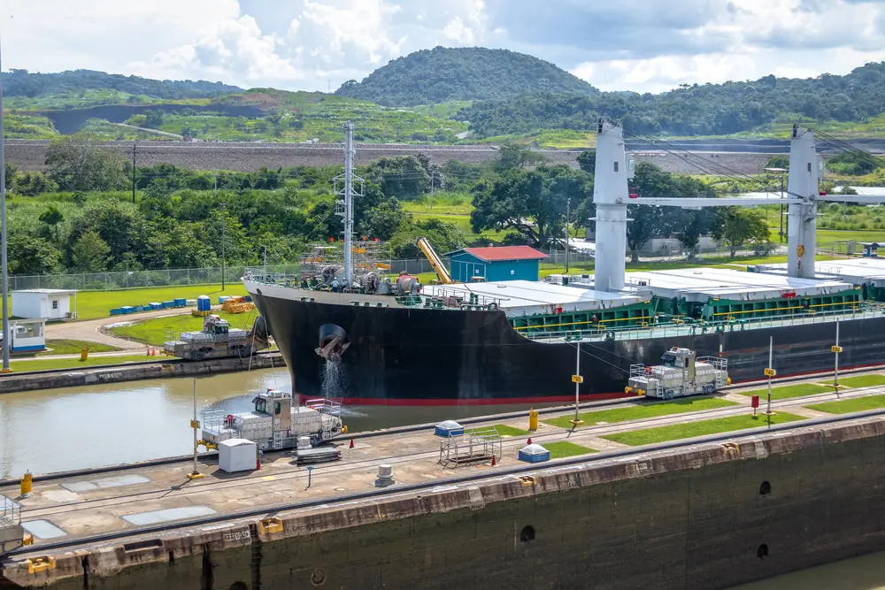
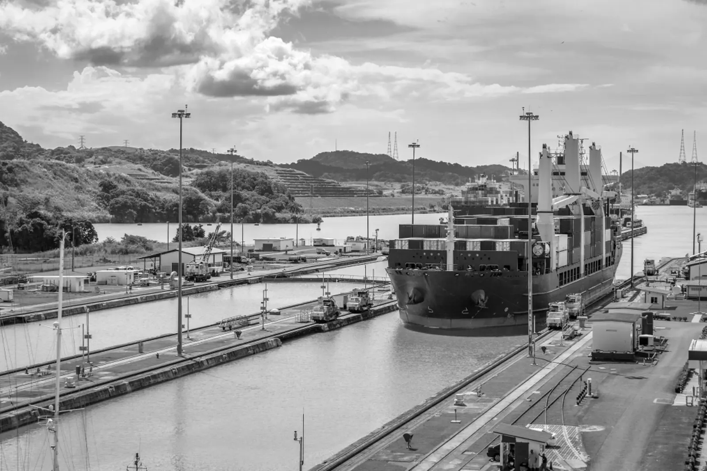
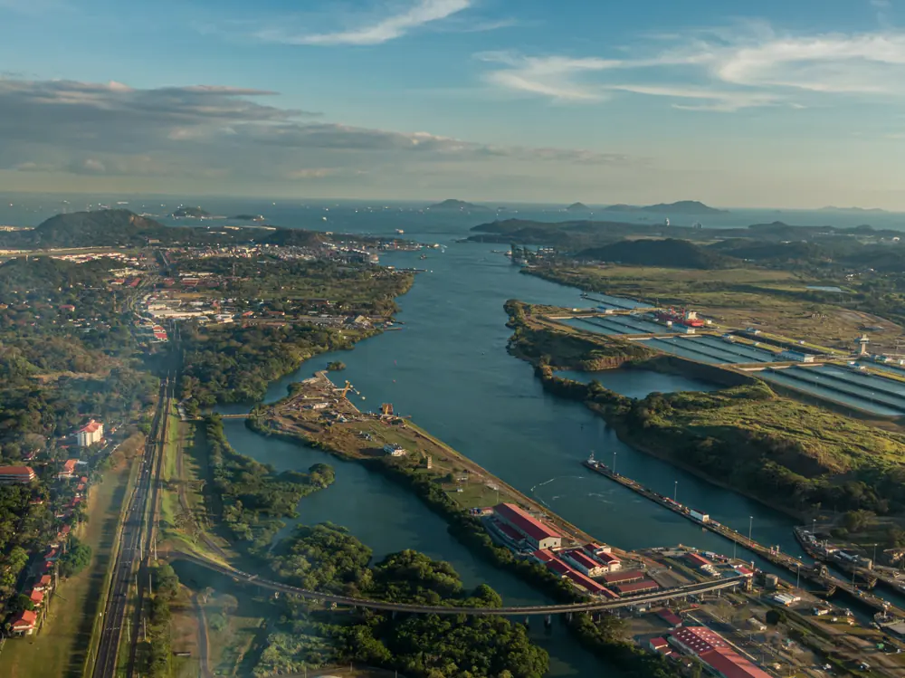
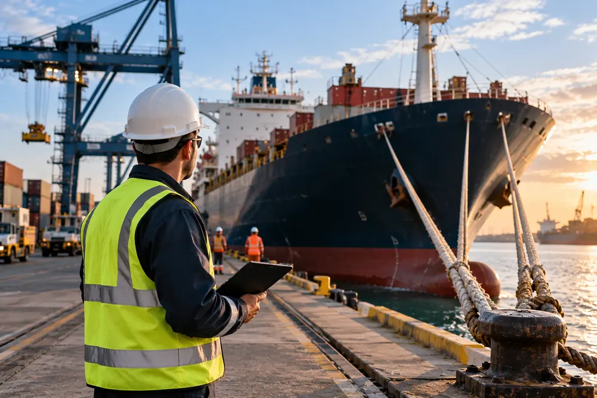
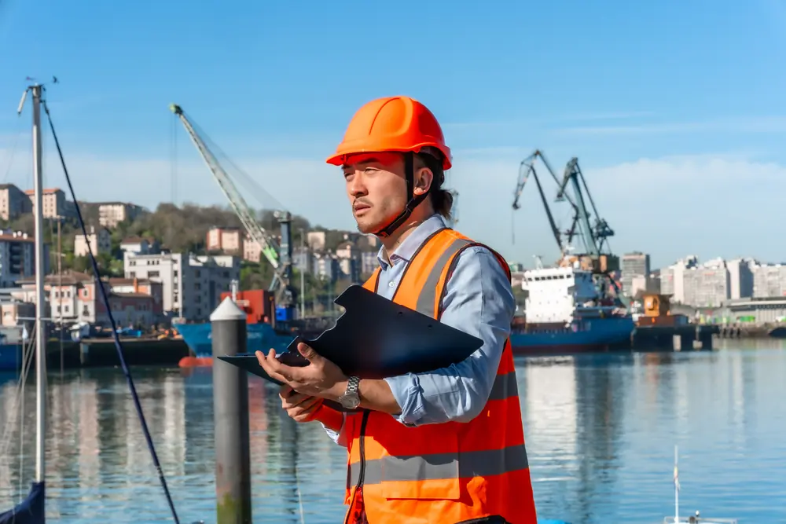
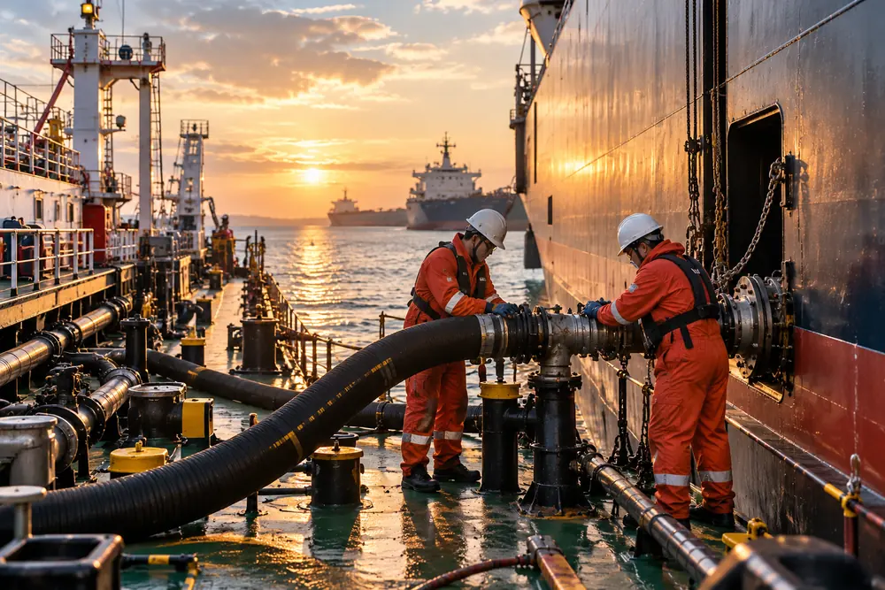
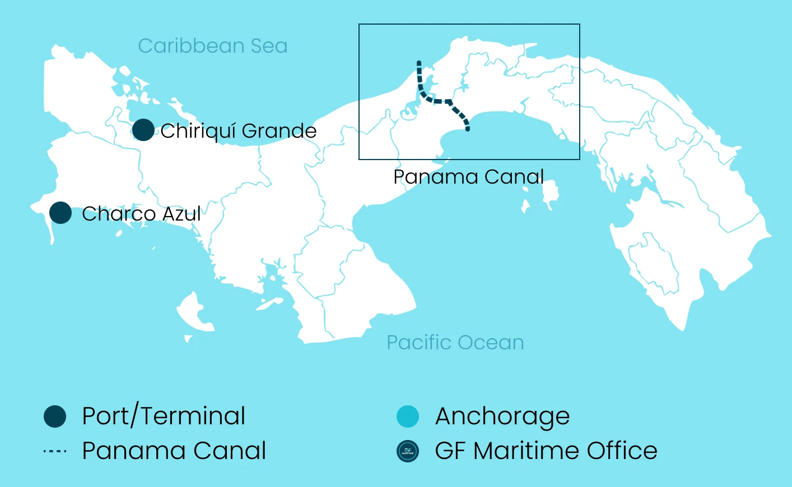
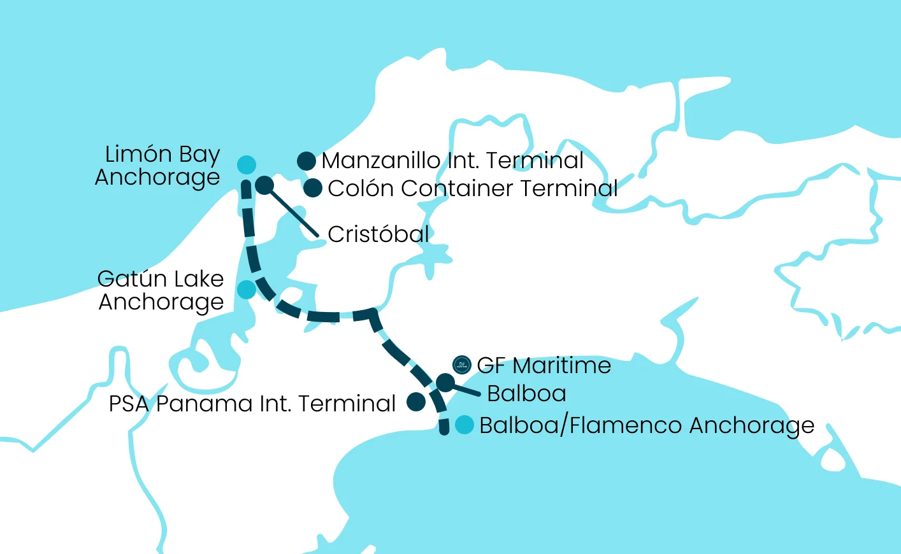

Canal Transits
From transit planning and documentation to coordination with the Panama Canal authorities, pilots and tugs, we manage the requirements associated with each canal transit.
Find Out More
Comprehensive ship agency and maritime services
GF Maritime provides reliable, responsive and end-to-end agency support, helping shipowners, operators, charterers and maritime stakeholders navigate the operational requirements of Panama with confidence.

Your Trusted Partner in Panama
GF Maritime is a dedicated ship agency providing comprehensive support to vessels transiting the Panama Canal and calling at ports throughout Panama.
Combining strong local knowledge with extensive international maritime experience, we provide a single, reliable point of contact for canal transits, port calls, husbandry, crew logistics, bunker coordination and other essential maritime services.
Our experienced team understands that every vessel movement is time-sensitive and commercially important. We work closely with owners, operators, charterers and other stakeholders to coordinate every detail efficiently, keeping vessels moving and operations on schedule.
End-to-end solutions
From Panama Canal transit coordination to port calls, vessel husbandry and bunker arrangements, GF Maritime provides a coordinated range of maritime services through a single point of contact.

From transit planning and documentation to coordination with the Panama Canal authorities, pilots and tugs, we manage the requirements associated with each canal transit.
Find Out More
We coordinate the essential services required to support vessels and crews during their time in Panama, helping ensure that operational, crew and logistical requirements are handled efficiently.
Find Out More
Our port agency services provide comprehensive support for vessels calling at Panamanian ports, from crew changes and medical assistance to cash-to-master and spare parts logistics.
Find Out More
Providing dedicated local representation for owners and their interests, with oversight of vessel operations, service providers and costs throughout the port call or transit.
Find Out More
We coordinate bunker requirements alongside vessel operations, working with vessels and suppliers to facilitate efficient scheduling, communication and delivery arrangements.
Find Out MorePanama’s Maritime Gateway
At the heart of global maritime trade, the Panama Canal connects the Atlantic and Pacific Oceans and provides a critical route for vessels moving between major international markets.
GF Maritime is strategically positioned to support vessels throughout their Panama Canal transit and port call requirements, with in-depth local knowledge and operational expertise across Panama’s maritime environment.
Wherever your vessel needs to be in Panama, GF Maritime is ready to support the journey.


Why GF Maritime
Backed by extensive experience across ship agency, vessel operations and maritime services.
A Panama-based team with an understanding of local port, canal and regulatory requirements.
Integrated agency and maritime support designed to simplify vessel operations.
Operationally focused support with clear communication and attention to detail.
Strong relationships across shipowners, operators, charterers, suppliers and maritime service providers.
Get in touch
From Panama Canal transit planning to port calls and vessel support, GF Maritime is ready to provide the local expertise and operational coordination your vessel requires.
Talk to our team about your next Panama Canal transit or port call.